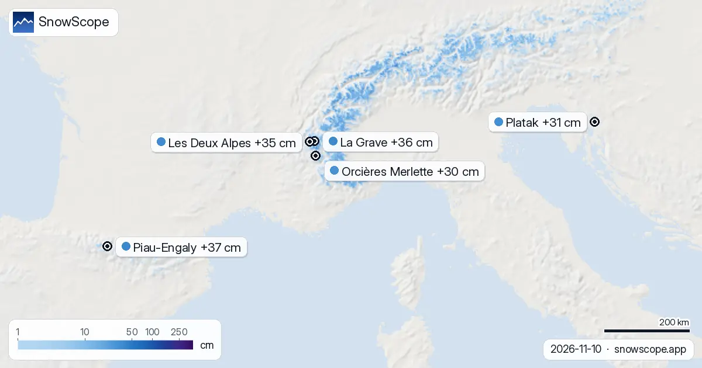

Courmayeur lidera Europa con 88 cm pronosticados para el miércoles
Este domingo, 15 de noviembre de 2026, nuestro modelo de nieve predice que Courmayeur, en los Alpes italianos, recibirá la mayor cantidad de nieve nueva en Europa durante las próximas 72 horas, con un estimado de 88 cm. Para Norteamérica, se espera que Kingvale, en el oeste de EE. UU., vea la mayor cantidad de nieve nueva, con 44 cm durante el mismo período.
Consulta la previsión de nieve en tiempo real de Courmayeur en la app SnowScopeEspesor de nieve, alertas de nieve polvo y mapa 3D, gratis.
Alpes europeos: Courmayeur y Les Grands Montets encabezan la lista
En los Alpes europeos, Courmayeur, en Italia, recibirá la mayor cantidad de nieve nueva para el miércoles, 18 de noviembre, con 88 cm esperados en sus pistas altas. Esta es una cantidad significativa para mediados de noviembre. Muy cerca, Les Grands Montets, en Francia, pronostica 79 cm de nieve nueva.
Otros centros turísticos en los Alpes franceses e italianos también esperan buenas nevadas. La Thuile, en la frontera de Francia e Italia, podría ver 78 cm, mientras que Les Arcs y Orelle, en Francia, pronostican 77 cm. Glacier 3000, en Suiza, también está en la lista con 73 cm esperados.
| # | Estación | Región | +24 h | +72 h | Cota de nieve |
|---|---|---|---|---|---|
| 1 | Courmayeur | Alpes · Italia | 10 cm | 88 cm | 2500 m |
| 2 | Les Grands Montets | Alpes · Francia | 11 cm | 79 cm | 2100 m |
| 3 | La Thuile ski | Alpes · Francia / Italia | 9 cm | 78 cm | 2200 m |
| 4 | Les Arcs | Alpes · Francia | 9 cm | 77 cm | 2100 m |
| 5 | Orelle | Alpes · Francia | 8 cm | 77 cm | 2500 m |
| 6 | Glacier 3000 | Alpes · Suiza | 13 cm | 73 cm | 2400 m |
| 7 | Vichères-Bavon | Alpes · Suiza | 9 cm | 73 cm | 2400 m |
| 8 | Sainte-Foy Tarentaise | Alpes · Francia | 7 cm | 71 cm | 2000 m |
| # | Estación | Región | +24 h | +72 h | Cota de nieve |
|---|---|---|---|---|---|
| 1 | Kingvale | Oeste de EE. UU. · Estados Unidos | 10 in (25 cm) | 17 in (44 cm) | – |
| 2 | Mt. Shasta Ski Park | Oeste de EE. UU. · Estados Unidos | 2 in (4 cm) | 16 in (40 cm) | 4300 ft (1300 m) |
| 3 | Bear Valley | Oeste de EE. UU. · Estados Unidos | 7 in (19 cm) | 14 in (36 cm) | 5200 ft (1600 m) |
| 4 | Donner Ski Ranch | Oeste de EE. UU. · Estados Unidos | 7 in (19 cm) | 14 in (36 cm) | 5200 ft (1600 m) |
| 5 | Sierra-at-Tahoe | Oeste de EE. UU. · Estados Unidos | 7 in (18 cm) | 14 in (35 cm) | 5600 ft (1700 m) |
| 6 | Kirkwood | Oeste de EE. UU. · Estados Unidos | 6 in (16 cm) | 13 in (34 cm) | 5600 ft (1700 m) |
| 7 | Palisades Tahoe Alpine Meadows | Oeste de EE. UU. · Estados Unidos | 7 in (17 cm) | 13 in (32 cm) | 5200 ft (1600 m) |
| 8 | Homewood | Oeste de EE. UU. · Estados Unidos | 6 in (16 cm) | 12 in (30 cm) | – |
| # | Estación | Región | +24 h | +72 h | Cota de nieve |
|---|---|---|---|---|---|
| 1 | Sasquatch | Oeste de Canadá · Canadá | 17 cm | 17 cm | 900 m |
| 2 | Grouse Mountain | Oeste de Canadá · Canadá | 16 cm | 17 cm | 900 m |
| 3 | Cypress Mountain | Oeste de Canadá · Canadá | 13 cm | 14 cm | 900 m |
| 4 | Whistler Blackcomb | Oeste de Canadá · Canadá | 13 cm | 13 cm | 900 m |
| 5 | Mt Seymour | Oeste de Canadá · Canadá | 12 cm | 13 cm | 900 m |
| 6 | Banff Sunshine Village | Oeste de Canadá · Canadá | 9 cm | 12 cm | 1300 m |
| 7 | Ski Callaghan | Oeste de Canadá · Canadá | 11 cm | 11 cm | 700 m |
| 8 | Mount Washington Alpine Resort | Oeste de Canadá · Canadá | 10 cm | 11 cm | 800 m |

Oeste de EE. UU.: Kingvale lidera con 44 cm
En el oeste de EE. UU., se pronostica que Kingvale recibirá la mayor cantidad de nieve nueva durante las próximas 72 horas, con 44 cm (17 in) esperados. Mt. Shasta Ski Park también se perfila con una buena cantidad, con 40 cm (16 in) para el miércoles. Bear Valley y Donner Ski Ranch pronostican 36 cm (14 in) cada uno.
La cota de nieve en el oeste de EE. UU. variará, con Mt. Shasta Ski Park viendo nieve hasta los 1300 m (4265 ft) y otros centros turísticos como Bear Valley y Donner Ski Ranch esperando nieve hasta los 1600 m (5249 ft).
Oeste de Canadá: Sasquatch y Grouse Mountain
El oeste de Canadá también verá nieve nueva, aunque en menores cantidades en comparación con Europa y el oeste de EE. UU. Sasquatch y Grouse Mountain pronostican 17 cm de nieve nueva para el miércoles. Cypress Mountain y Whistler Blackcomb esperan 14 cm y 13 cm respectivamente.
La cota de nieve en el oeste de Canadá será relativamente baja, alrededor de 900 m para muchos centros turísticos, lo que significa que la nieve podría caer en elevaciones más bajas.
Detalles del pronóstico para las próximas 24 horas
Mirando solo las próximas 24 horas hasta el lunes, 16 de noviembre, se pronostica que Glacier 3000, en Suiza, recibirá la mayor cantidad de nieve nueva en Europa, con 13 cm. En el oeste de EE. UU., Kingvale lidera con 25 cm (10 in) esperados. Sasquatch, en Canadá, pronostica 17 cm. Estas son nuestras estimaciones del modelo para las pistas altas.
Consejos para esquiadores
- Para la nieve nueva más profunda en Europa, concéntrate en las pistas altas de Courmayeur y Les Grands Montets, donde se esperan nevadas significativas para el miércoles.
- En el oeste de EE. UU., Kingvale y Mt. Shasta Ski Park son buenas opciones para la nieve fresca, especialmente en elevaciones más altas donde la nieve se acumulará por encima de la cota de nieve pronosticada.
- Ten en cuenta que la nieve de principios de temporada puede ser escasa y las rocas pueden estar ocultas bajo la nieve fresca. Consulta siempre las condiciones locales y la información del centro turístico.
- Si planeas salir fuera de pista, consulta siempre el boletín oficial de avalanchas de la zona.
- Para conocer las profundidades de nieve y los pronósticos más actualizados, consulta la aplicación SnowScope.
Sobre estas cifras
Los espesores de nieve de las estaciones son la nieve más profunda en las pistas altas según el modelo de nieve de SnowScope (unos 1 km, cálculo del 15 de noviembre); son estimaciones para una zona, no una medida en un punto. Los valores de las estaciones de medida son medidas en la fecha indicada. Las previsiones pueden cambiar. Consulta siempre el boletín oficial de aludes antes de salir fuera de pista.
Boletines oficiales de aludes: EAWS (Europe) · avalanche.org (US) · Avalanche Canada
Citar este informe
Para investigación, docencia o prensa: cifras y gráficos reutilizables libremente bajo CC BY 4.0 con esta cita.
SnowScope (2026), Courmayeur lidera Europa con 88 cm pronosticados para el miércoles, https://snowscope.app/blog/es/2026/11/where-most-snow-falls-next-72-hours-15-november-2026.html, consultado el 2026-11-15
SnowScope (Atlas Labs). (2026, November 15). Courmayeur lidera Europa con 88 cm pronosticados para el miércoles. SnowScope snow reports. https://snowscope.app/blog/es/2026/11/where-most-snow-falls-next-72-hours-15-november-2026.html
BibTeX
@misc{snowscope2026wheremostsnowfallsnext72,
author = {{SnowScope (Atlas Labs)}},
title = {Courmayeur lidera Europa con 88 cm pronosticados para el miércoles},
year = {2026},
month = nov,
howpublished = {\url{https://snowscope.app/blog/es/2026/11/where-most-snow-falls-next-72-hours-15-november-2026.html}},
note = {Published 2026-11-15 16:33 UTC; accessed 2026-11-15}
}· CC BY 4.0 · Métodos, datos y herramientas →
Courmayeur: nieve y temperatura según la altura, este invierno vs el pasado (herramientas) →
Sigue Courmayeur
Gratis: un aviso cuando llega la nieve y la previsión cada mañana.
Más partes de nieve

Nuestro modelo de nieve predice que Whistler Blackcomb recibirá 88 cm de nieve nueva para el lunes 16 de noviembre de 2026, liderando los centros turísticos globales.

Superficie nevada: 49.467 sq mi (128.120 km²) el 11 de noviembre, 49.050 sq mi (127.040 km²) hoy, 64.429 sq mi (166.870 km²) previstos el 16 de …

Cada día listamos las estaciones que van a recibir más nieve nueva, en las próximas 24 horas y hasta el 13 de noviembre, en Europa, Marruecos y …